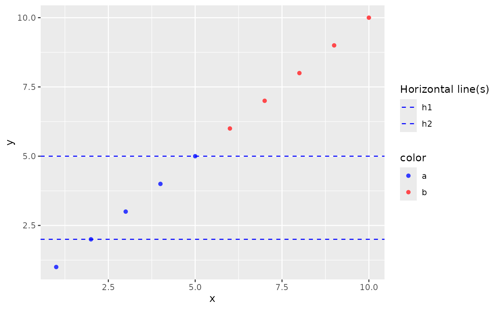
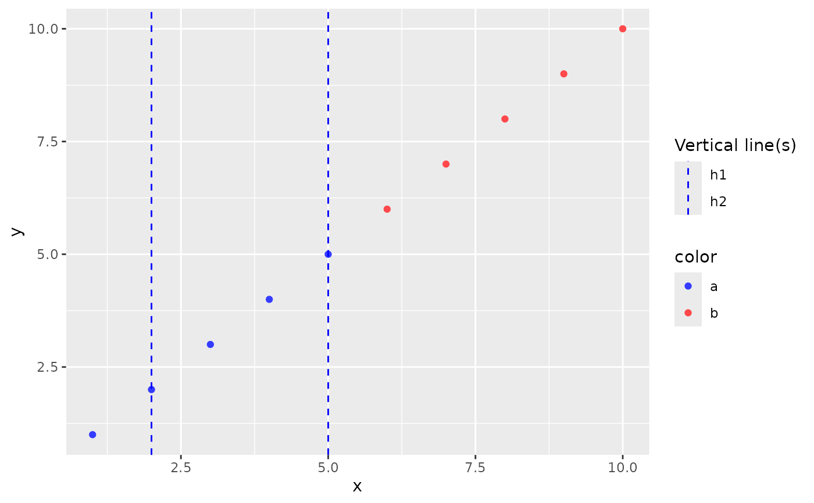
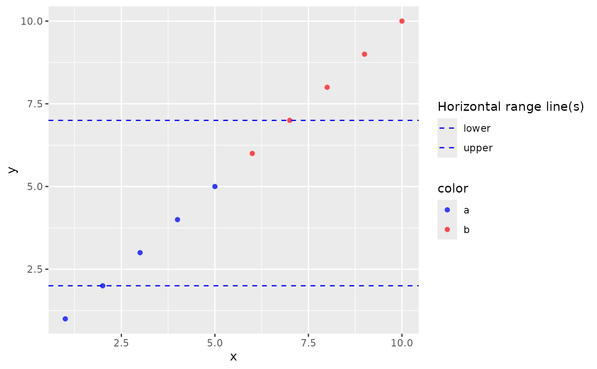
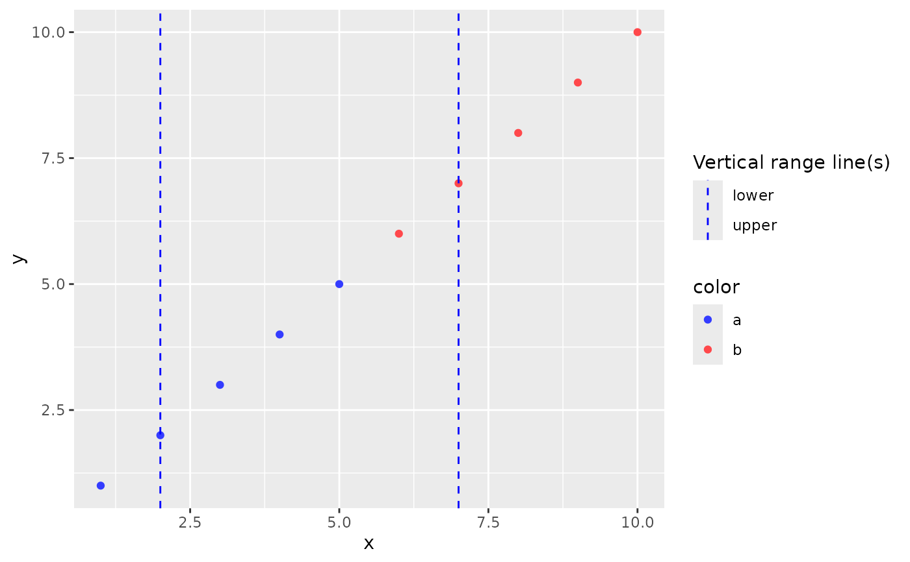

Arbitrary lines for ggplot2
Usage
geom_arb_hline(
yintercept,
label = "Horizontal line",
color = "red",
legend_title = "Horizontal line(s)",
...
)
geom_arb_vline(
xintercept,
label = "Vertical line",
color = "red",
legend_title = "Vertical line(s)",
...
)
geom_range_hline(
vars,
data,
color = "green",
label = vars,
legend_title = "Horizontal range line(s)",
...
)
geom_range_vline(
vars,
data,
color = "green",
label = vars,
legend_title = "Vertical range line(s)",
...
)Arguments
- yintercept
(
numeric)
Position of the horizontal line(s) on the y-axis- label
(
character)
Label to be rendered in the legend. Should be a single string or vector of length equal to length ofxintercept.- color
(
character)
Valid color convertible to RGB scale bygrDevices::col2rgb(). Should be a single string or vector of length equal to length ofxintercept.- xintercept
(
numeric)
Position of the vertical line(s) on the x-axis- vars
(
character)
names of variables(ANR*)or values(*LOQ)identifying intercept values.
Examples
# horizontal arbitrary lines
data <- data.frame(x = seq_len(10), y = seq_len(10), color = rep(c("a", "b"), each = 5))
ggplot2::ggplot(data, ggplot2::aes(x = x, y = y, color = color)) +
ggplot2::geom_point() +
goshawk:::geom_arb_hline(
yintercept = c(2, 5), color = "blue", label = c("h1", "h2"), linetype = 2
)

# vertical arbitrary lines
data <- data.frame(x = seq_len(10), y = seq_len(10), color = rep(c("a", "b"), each = 5))
ggplot2::ggplot(data, ggplot2::aes(x = x, y = y, color = color)) +
ggplot2::geom_point() +
goshawk:::geom_arb_vline(
xintercept = c(2, 5), color = "blue", label = c("h1", "h2"), linetype = 2
)

# horizontal range
data <- data.frame(
x = seq_len(10),
y = seq_len(10),
color = rep(c("a", "b"), each = 5),
lower = rep(c(2, 3), each = 5),
upper = rep(c(7, 8), each = 5)
)
ggplot2::ggplot(data, ggplot2::aes(x = x, y = y, color = color)) +
ggplot2::geom_point() +
goshawk:::geom_range_hline(
vars = c("lower", "upper"),
data = data.frame(lower = 2, upper = 7),
color = "blue",
linetype = 2
)

# vertical range
data <- data.frame(
x = seq_len(10),
y = seq_len(10),
color = rep(c("a", "b"), each = 5),
lower = rep(c(2, 3), each = 5),
upper = rep(c(7, 8), each = 5)
)
ggplot2::ggplot(data, ggplot2::aes(x = x, y = y, color = color)) +
ggplot2::geom_point() +
goshawk:::geom_range_vline(
vars = c("lower", "upper"),
data = data.frame(lower = 2, upper = 7),
color = "blue",
linetype = 2
)
